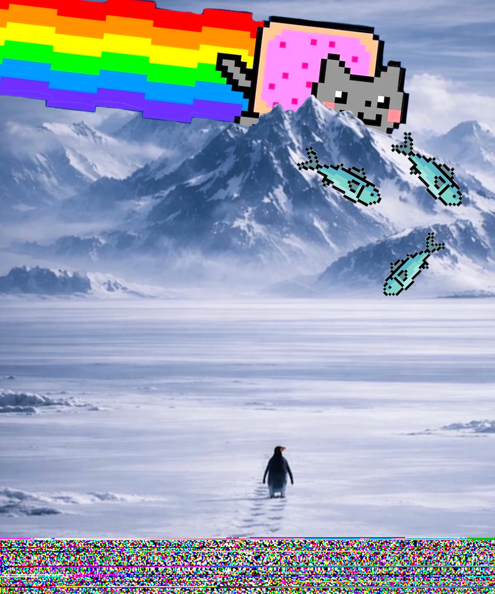

This is my meme-mashup of a two memes. I used the nyan cat image and the nihilist penguin image. I glitched the bottom of the penguin image using text editor. I added pixel fish that nyan cat is scattering for the penguin to represent that hope with save the day. The penguin for me is our desperate situation in the US as we are being governed by a cruel and corrupt administration and it feels so out of our control, but nyan cat is joy and hope and flying in to save the day so the penguin isn't actually walking off to his death but finding hope.